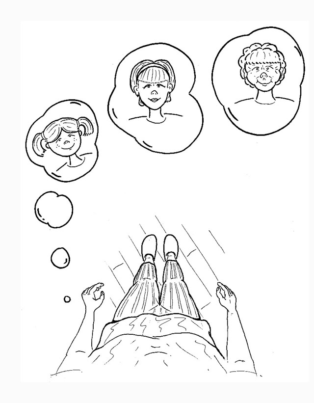
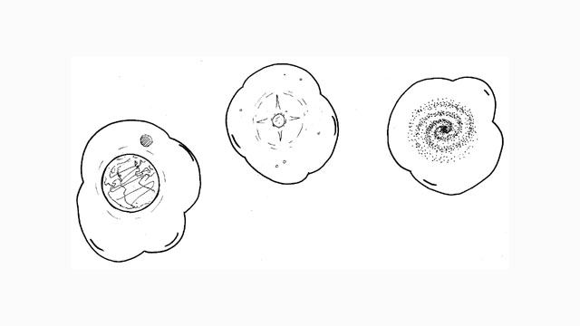
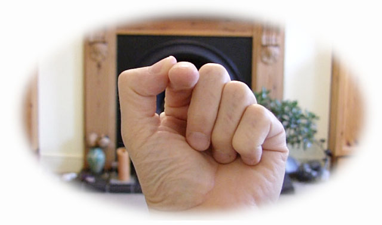

Other people see your face, your appearance, but you don’t – except indirectly. You depend on reflections from others, from your environment, from mirrors and cameras to know who you are in the world. This is human self-consciousness: being aware of your appearance, of you-as-you-are-for-others.
These images of yourself (changing as you grow older) occur to you as 'capacity', to you-as-you-are-for-yourself. You are faceless, yet at the same time you have in mind (you are capacity for) an image of your face – or your body, your family, religion, nation, race… Your self-image at this level is human.
If you imagine the face of the planet you are still entertaining a self-image, but because this image is not human you may not think of it as yourself. Yet it is yourself: it is you from further away. At this range you are planetary.
Entertaining any image of how you look, whether it’s human, planetary, solar, galactic… cellular, molecular, atomic… is being self-conscious.
Who thinks of these images? Who is self-conscious at all these different levels? You know yourself as a person, a planet, a star, a molecule… Who is the ‘you’, the reality behind your many appearances? Point at the ‘you’ and see.
